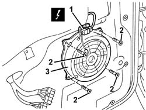

5580T11 bose sound system front speaker (one), lh or rh - r r with door panel removed
- Path
- Procedures > 55 ELECTRICAL EQUIPMENT > 5580 SPECIAL ACCESSORIES > 5580T bose sound system > 5580T11 bose sound system front speaker (one), lh or rh - r r with door panel removed
- Kind
- repair procedure (removal / refitting; the operation number is the code)
- Applies to
- all engines; all production periods
- Interactive page
- https://sloeber94.github.io/elrnDB-a147/en/#/3025629
Applies to: all engines; all production periods
 Removing
Removing
 Refitting
RefittingWork with caution
1. Disconnect the electrical connections.
 | Name | Connector |
|---|---|---|
1 | Speaker in driver's .front door |
| Name | Connector |
|---|---|---|
1 | Speaker in front passenger door |
2. Unscrew the bolts
3. Recover the speaker.

Applies to: all engines; all production periods
Refitting
RemovingCheck that the speaker is not damaged.
Position the speaker.
Tighten the screws.
Connect the electrical connection
Check the operation of the speaker.